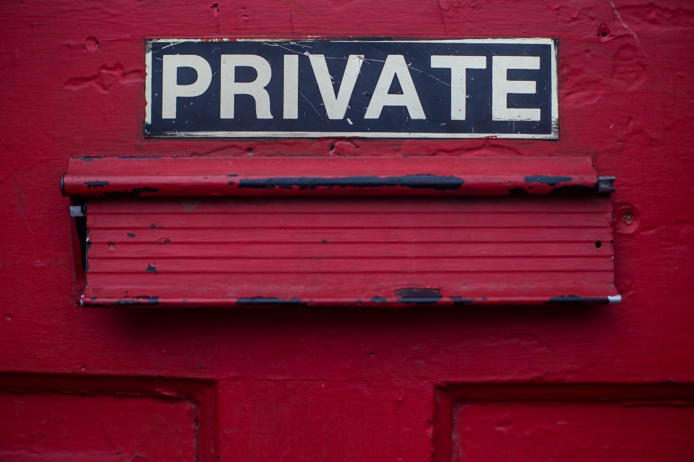

Ansible Easy VPN

Skrip interaktif sederhana/Playbook ansible yang menyiapkan server Wireguard VPN berbasis Ubuntu
Penggunaan
wget https://raw.githubusercontent.com/notthebee/ansible-easy-vpn/main/bootstrap.sh -O bootstrap.sh && bash bootstrap.shFitur
- Peningkatan otomatis dan tanpa pengawasan
- Pengerasan SSH
- Pembuatan pasangan kunci publik SSH (opsional, Anda juga dapat menggunakan kunci Anda sendiri)
- Pemberitahuan e-mail (menggunakan server SMTP eksternal misalnya GMail)
- UFW dan Fail2Ban
- Wireguard WebUI (melalui wg-easy)
- Otentikasi dua faktor untuk WebUI (Authelia)
- Server web yang dikeraskan (Bunkerweb)
Persyaratan
- VPS berbasis KVM (atau instans AWS EC2) dengan alamat IPv4 khusus
- Ubuntu Server 20.04 atau 22.04
FAQ
T: Saya telah menjalankan playbook dengan sukses, tetapi sekarang saya ingin mengubah nama domain / nama pengguna / kata sandi. Bagaimana saya bisa melakukannya?
Edit file variabel, instal dependensi untuk pengguna baru dan jalankan kembali playbook:
cd $HOME/ansible-easy-vpn
ansible-galaxy install -r requirements.yml
nano inventory.yml
ansible-vault edit secret.yml
ansible-playbook run.ymlT: Saya tidak dapat mengakses Wireguard WebUI setelah menjalankan playbook
Kemungkinan besar, pelakunya adalah nama domain yang salah. Periksa log Bunkerweb:
docker logs bunkerwebAlasan lain mungkin kredensial SMTP salah. Lihat log Authelia:
docker logs autheliaT: Saya tidak dapat menyalin kunci SSH ke mesin Windows saya
Di Windows, Anda mungkin perlu membuat folder secara manual sebelum menjalankan perintah di akhir playbook:C:\Users\<username>\.ssh
mkdir C:\Users\<username>\.ssh
scp -P 22 root@<server-ip-address>:/tmp/id_ssh_ed25519 C:\Users\<username>\.ssh
ssh -p 22 <username>@<server-ip-address> -i C:\Users\<username>\.ssh\id_ssh_ed25519